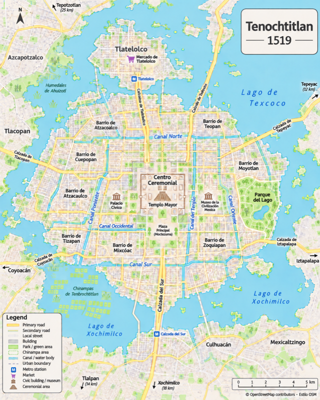

Tenochtitlan 1519

Expanded Canal Network
A prompt-led visual interpretation of Tenochtitlan, showing an island urban core connected by causeways and canals within the lake system.
The idea
The 2026 Day 10 prompt invites a map made through prompting alone. This image imagines the city's lake setting and its network of canals, causeways, neighbourhoods and chinampa landscapes.
How to read this map
This is an illustrative raster image, not a georeferenced historical survey. The project folder contains no source layers, prompt history or reproducible mapping code, so the locations and labels—including the expanded canal network—have not been independently checked against historical sources.
Credits
The image carries a printed © OpenStreetMap contributors · Estilo OSM credit. The underlying map data extract and its use in the illustration could not be verified from the available project files. See OpenStreetMap copyright and licensing.